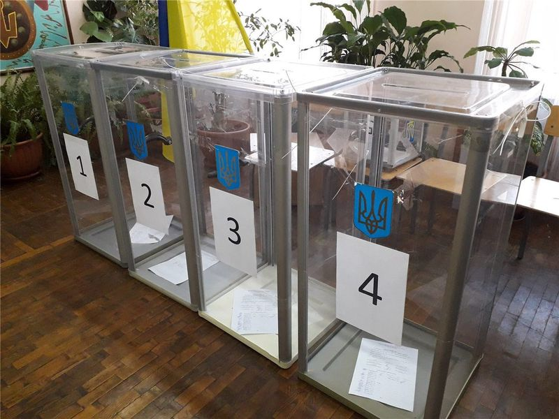
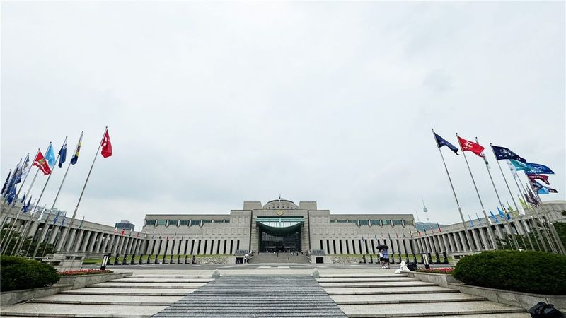
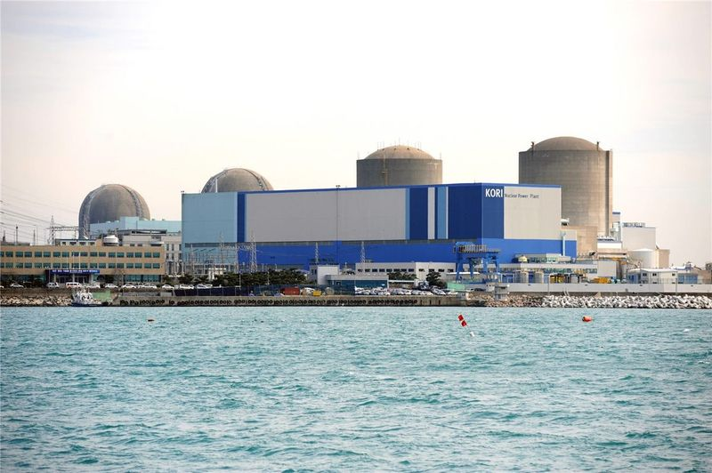

橋한국
한국이재명 정부 2년차, 728조 예산 'AI 대전환'에 건다
정부가 2026년을 'AI 대전환 원년'으로 선포하고 728조 원 슈퍼 확장 재정을 편성했다. AI 3대 강국 도약이 목표지만, 고환율·재정건전성 논쟁이 동시에 불붙는다.
정부가 2026년을 'AI 대전환 원년'으로 선포하고 728조 원 슈퍼 확장 재정을 편성했다. AI 3대 강국 도약이 목표지만, 고환율·재정건전성 논쟁이 동시에 불붙는다.

대통령 선거 정확히 1년 만에 치러진 전국 단위 선거. 지역 권력 지형과 국정 동력에 영향.

올해 1월 한중 정상회담으로 양국 관계가 9년 만에 정상 궤도에 올랐다. 경제·외교안보 대화 채널이 복원되고, 인적·문화 교류가 확대된다.

이재명 대통령이 브뤼셀에서 안토니우 코스타 EU 정상회의 상임의장, 우르줄라 폰데어라이엔 집행위원장과 정상회담을 갖고 공동성명을 채택했다. 러시아-북한 군사협력 규탄, 북한 비핵화 원칙, 대만해협 평화·안정의 중요성이 명시됐다.

6·3 지방선거 투표용지 부족 사태의 책임론이 확산되며 송파구 선거관리위원장이 사임했다. 선관위가 투표용지 인쇄 기준을 낮추면서 정식 회의를 한 번도 열지 않았다는 지적이 나와 '시스템 총체적 부실' 비판이 커지고 있다.

국민의힘이 새 원내대표로 정점식 의원을 선출했다. 잇단 선거 패배 후 쇄신 경쟁 속에서 당권파 후보가 승리하면서, 당의 노선을 둘러싼 논쟁은 계속될 전망이다.

이재명 대통령이 농어촌 기본소득의 영구 도입을 제안하며 재원으로 농어촌특별세 활용을 언급했다. 인구소멸 위기의 농어촌에 정기 소득을 지급하는 구상으로, 재원·형평성 논쟁이 뒤따를 전망이다.
이재명 대통령의 국정 지지율이 한 주 만에 9.4%포인트 급락했다. 지방선거 투표용지 부족 사태 등 악재가 겹친 가운데, 이 대통령은 SNS에 사과의 글을 올렸다.

군 핵심 권력기관으로 꼽혀 온 국군방첩사령부가 해체되고, 정보 업무를 담당하는 방첩본부가 신설된다. 군 정보기관의 정치 개입 논란을 차단하기 위한 조직 개편이다.

김영훈 고용노동부 장관이 인공지능(AI)이 만들어내는 이익을 사회가 공정하게 나눠야 한다며 '새로운 사회계약'을 화두로 제시했다. AI발 고용 충격에 대응하는 노동정책의 방향타가 될지 주목된다.

곽상언·박수영 등 한국 국회의원 3명이 대만을 방문하자 중국이 '하나의 중국 원칙에 대한 도전'이라며 강하게 반발했다. 한국 측에서는 입법부 차원의 의원외교라는 설명이 나온다. 양측 입장을 나란히 전한다.

원전 1기 가동까지 미국은 43년이 걸린 사례가 있을 만큼 건설 역량이 약화됐다. 미국 보수 진영이 한국 원전 산업과의 협력을 지지하는 배경에는 비용·공기에서 검증된 한국형 원전의 경쟁력이 있다는 분석이 나온다.

김민석 국무총리가 6·10 민주항쟁 39주년을 맞아 '39년 전 오늘은 민주주의의 위대한 이정표'라고 기념했다. 선거 신뢰 논란이 진행 중인 시점이어서 민주주의 제도에 대한 메시지로도 읽혔다.